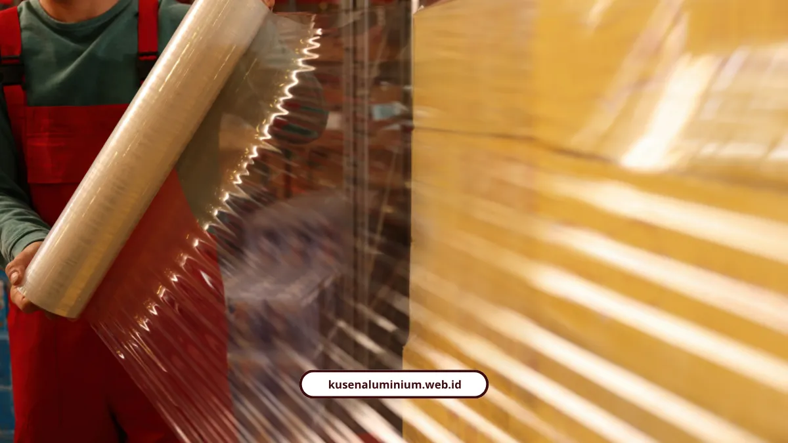

Teknisi Kusen Kab Malang: Kerja Rapi, Bergaransi

📌 Ringkasan Inti
Ringkasan standar kerja profesional dan pengawalan mutu teknisi kusen aluminium di Kabupaten Malang dari meja workshop hingga pemasangan tuntas bergaransi:
- Alur kerja terintegrasi: pemotongan miter 45° toleransi 0,5 mm di workshop (3–7 hari kerja) dan pemasangan lokasi tuntas cepat hanya 1–2 hari kerja.
- Proteksi pengiriman berlapis: bubble wrap anti-statik, pelindung corner guard, strapping nilon anti gores, hingga custom wooden crate untuk proyek bernilai tinggi.
- Mitigasi rute pegunungan: survei akses tanjakan sempit serta transshipment ke armada pick-up lincah (L300/Gran Max) agar material tiba mulus tanpa cacat.
- Transparansi serah terima (BAST): penurunan manual hati-hati, inspeksi fisik bersama di lokasi, dan penandatanganan berita acara resmi sebelum instalasi.
- Kredensial aplikator terpercaya: 10+ tahun pengalaman, 500+ bukaan terpasang di Malang Raya, karet EPDM kedap cuaca, dan kartu garansi resmi tertulis.
- Apa saja yang dikerjakan teknisi dari workshop sampai terpasang?
- Bagaimana kusen dikemas supaya tidak lecet di perjalanan?
- Truk apa yang cocok untuk jalan tanjakan dan sempit?
- Kenapa ganti rugi ekspedisi biasa sering tidak cukup?
- Bagaimana serah terima dan pemasangan di lokasi berjalan?
- Apa kredensial teknisi kami?
- Kusen presisi hanya berguna kalau tiba utuh dan terpasang tanpa celah
Teknisi kusen Kab Malang kami mengawal kusen dari workshop sampai terpasang, lengkap dengan BAST. Melayani Kabupaten Malang, pemasangan tuntas 1-2 hari kerja.
Tahap kerja, cara packing, sampai berita acara serah terima kami tulis apa adanya, termasuk risikonya.
Apa saja yang dikerjakan teknisi dari workshop sampai terpasang?
Teknisi memotong profil dengan mesin miter presisi di workshop, mengemas, mengawal pengiriman, memeriksa bersama saat tiba, lalu memasang kusen dalam 1-2 hari kerja.
- Workshop: pemotongan miter 45° dengan toleransi 0,5 mm, memakan 3-7 hari kerja.
- Packing: profil dibungkus, sudut dilindungi, dan diikat dengan aman.
- Pengiriman: armada disesuaikan dengan akses jalan menuju lokasi.
- Serah terima: pemeriksaan bersama dan penandatanganan BAST.
- Pemasangan: selesai dalam 1-2 hari kerja.
Bagaimana kusen dikemas supaya tidak lecet di perjalanan?
Profil dibungkus bubble wrap anti-statik atau stretch film, setiap sudutnya diberi corner guard, dan diikat strapping nilon, bukan tali besi. Ikatan besi bisa merusak lapisan finishing.
Aluminium tahan korosi, tetapi permukaannya rentan goresan dan penyok. Kerusakan permukaan sering bersifat permanen dan sulit diperbaiki tanpa mengorbankan tampilan.
Untuk barang besar atau bernilai tinggi, perlindungan ditambah:
- Peti kayu custom atau palet dari kayu kokoh yang tidak mudah lapuk
- Uji guncang (pre-seal shake test) sebelum peti disegel
- Stiker fragile agar petugas bongkar muat lebih berhati-hati

Truk apa yang cocok untuk jalan tanjakan dan sempit?
Truk besar 6-9 meter (CDD, Fuso, atau Tronton) cocok untuk membawa batangan profil 6 meter. Pick-up L300 atau Gran Max mengambil alih untuk jalan sempit dan tanjakan curam menuju lokasi.
Pemindahan muatan ke armada kecil ini disebut transshipment. Sebelum berangkat, rute disurvei: lebar tikungan, kemiringan jalan, ketinggian jembatan, dan kabel udara.
Widiasa Wijaya, spesialis logistik dan freight forwarding di Forwarder.ai, menyebut FTL (satu truk penuh) memberi waktu kirim lebih singkat, kontrol penuh atas penataan muatan, dan risiko kerusakan lebih minim. Kekurangannya, FTL lebih mahal dibanding LTL yang muatannya digabung.
Layanan Teknisi Kusen Aluminium Kabupaten Malang
Dikerjakan teknisi berpengalaman 10+ tahun dengan standar presisi miter 45°, packing aman sampai lokasi, BAST resmi, survei lokasi gratis, dan garansi kebocoran tertulis.
Kenapa ganti rugi ekspedisi biasa sering tidak cukup?
Tanpa asuransi, ganti rugi ekspedisi standar biasanya maksimal 10 kali ongkos kirim. Nilai kusen presisi sering jauh di atas angka itu.
Siti Hadijah, pakar finansial dan penulis logistik Cermati Protect, menyatakan asuransi pengiriman komprehensif mengganti kerugian sesuai nilai faktur barang yang sebenarnya. Cakupannya meliputi kerusakan fisik, goresan, penyok, hingga kehilangan.
Itu sebabnya packing dan handling kami perlakukan sebagai bagian dari kualitas kusen, bukan tambahan.
Bagaimana serah terima dan pemasangan di lokasi berjalan?
Serah terima dimulai dari pembongkaran hati-hati, pemeriksaan bersama, lalu penandatanganan Berita Acara Serah Terima (BAST).
- Kusen diturunkan tanpa ditarik atau digeser di atas tumpukan
- Pengirim dan penerima memeriksa kondisi barang bersama-sama
- BAST ditandatangani sebagai bukti kondisi saat tiba
Pengangkutan aman belum cukup tanpa pemasangan presisi. Celah antara kusen dan dinding bisa memicu kebocoran air hujan atau debu, sehingga teknisi menutupnya dengan karet EPDM dan sealant. Semua tahap ini bagian dari layanan kusen aluminium yang melayani Kab Malang secara utuh.
Apa kredensial teknisi kami?
Tim kami berpengalaman lebih dari 10 tahun dengan lebih dari 500 bukaan terpasang di Malang Raya. Standar kerjanya mencakup miter 45°, karet EPDM, dan sertifikat garansi pengerjaan.
- Sertifikat garansi pengerjaan dan garansi fungsi kunci
- Jaminan anti kebocoran sealant EPDM
- Profil standar SNI merek YKK AP, Alexindo, dan Forta
- Aksesoris stainless steel 304 anti karat
- Survei lokasi gratis untuk Kota Batu, Kota Malang, dan Kabupaten Malang
"Kusen presisi hasil fabrikasi workshop hanya akan sempurna jika dikawal oleh teknisi handal saat handling transportasi hingga terpasang rapi di dinding tanpa celah air."
Kusen presisi hanya berguna kalau tiba utuh dan terpasang tanpa celah
Kusen presisi hanya berguna kalau tiba utuh dan terpasang tanpa celah. Karena itu tim teknisi kami menangani packing, pemeriksaan bersama, BAST, sampai pemasangan.
Kekurangannya, alur lengkap ini butuh waktu produksi 3-7 hari kerja sebelum pemasangan 1-2 hari. Sebagai imbalannya, kondisi kusen tercatat jelas dan bergaransi.
Lihat contoh pemasangan di Galeri. Setelah itu hitung kebutuhan Anda di Kalkulator Estimasi Biaya, lalu pesan pemasangan melayani Kabupaten Malang lewat WhatsApp.
FAQ Seputar Teknisi Kusen Kab Malang
Pemasangan di lokasi selesai dalam 1-2 hari kerja. Waktu ini berlaku setelah profil dipotong di workshop selama 3-7 hari kerja.
Untuk barang besar atau bernilai tinggi, kusen dikemas dalam custom wooden crate atau palet kayu yang kokoh. Kemasan ini menjaga bentuk kusen dan tahan guncangan di dalam truk.
BAST adalah Berita Acara Serah Terima, dokumen yang ditandatangani pengirim dan penerima setelah kusen diperiksa bersama di lokasi. Dokumen ini mencatat kondisi barang saat tiba.